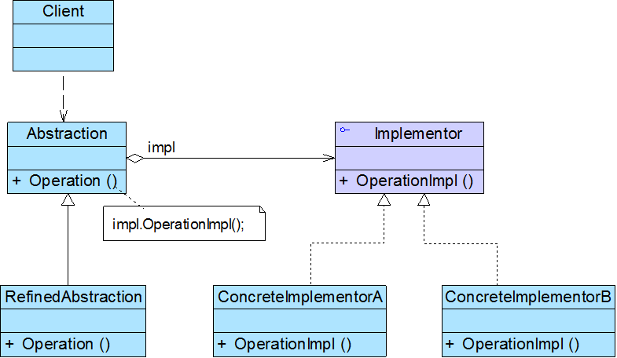
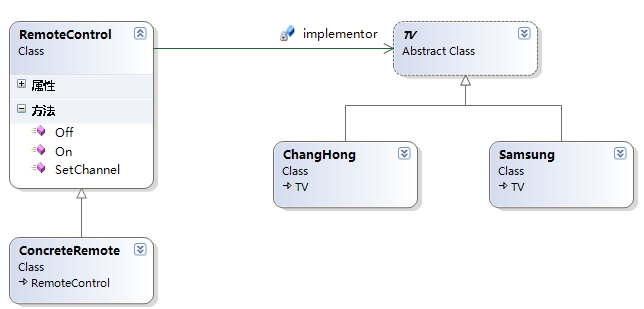

桥接模式包含以下4个角色：
Abstraction（抽象类）
RefinedAbstraction（扩充抽象类）
Implementor（实现类接口）
ConcreteImplementor（具体实现类）
经典语句:
Bridge模式的应用一般在“两个非常强的变化维度”，有时候即使有两个变化的维度，但是某个方向的变化维度并不剧烈——换言之两个变化不会导致纵横交错的结果，并不一定要使用Bridge模式。
桥模式并不同于适配器模式，适配器模式其实是一个事后诸葛亮，当发现以前的东西不适用了才去做一个弥补的措施。桥模式相对来说所做的改变比适配器模式早，它可以适用于有两个甚至两个以上维度的变化。
具体: Tank的上线, PC和手机平台. Tank各种不同类型. 不使用多继承接口.

==> add 新图
TV 作为RemoteControl的成员变量(属性). 所以是关联关系. (完全不用传递对象, 直接赋值了都!!)
如果通过构造传递, 实例化完之后传进来是聚合.
直接再里面实例化, 是组合.
依赖, 是对象传递进来后, 使用它的部分方法.

代码实现:
1, 右半部分
public abstract class TV { public abstract void On(); public abstract void Off(); public abstract void TuneChannel();//调整频道 } public class ChangHongTV:TV { public override void On() { Console.WriteLine("长虹电视已经打开"); } public override void Off() { Console.WriteLine("长虹电视已经关闭"); } public override void TuneChannel() { Console.WriteLine("长虹电视已经换台"); } } public class ChuangWeiTV:TV { public override void On() { Console.WriteLine("创维电视已经打开"); } public override void Off() { Console.WriteLine("创维电视已经关闭"); } public override void TuneChannel() { Console.WriteLine("创维电视已经换台"); } }
2) 左半部分
public class RemoteControl { private TV implementor; //实施者, 作为成员变量 public TV Implementor { get { return implementor; } set { implementor = value; } } public virtual void On() { implementor.On(); } public virtual void Off() { implementor.Off(); } public virtual void SetChannel() { implementor.TuneChannel(); } } public class ConcreteRemote:RemoteControl { public override void SetChannel() { Console.WriteLine("--------------"); base.SetChannel(); Console.WriteLine("--------------"); } }